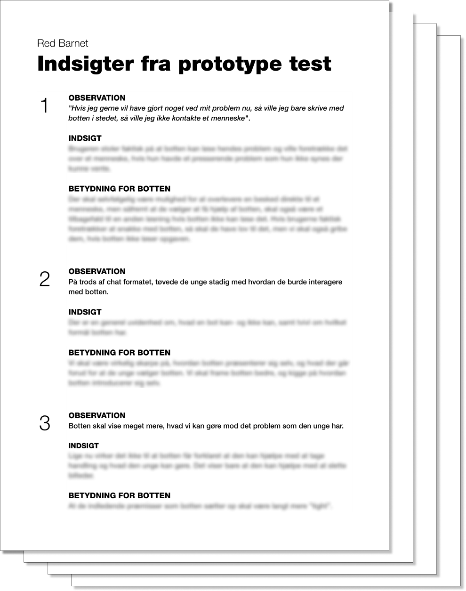

A chatbot to lean on
design thinking + research + conversational design
Overview
I was employed at
BotSupply
Our client was
Red Barnet
The timeframe was
4 months
My role was
Design lead
My contributions were
Concept- and scope development, research, stakeholder management,copywriting and developer handoff
Introduction
Today, we live in a world where anything digital is easy to share. All it takes is a few taps and you can share whatever you like. For today’s teens, sharing a private photo with someone else is a common part of exploring ones own sexuality in this digital age.
But the ease and speed at which pictures and video can be shared has led to a new, terrifying trend: revenge porn. In the worst of cases, images and video intended only for a single person spreads on social media at an unstoppable rate. Once material is viral, it exists forever. Being the victim of such a crime leaves a mark, and the victims, in many cases, are children.
Problem
Our client, Red Barnet (Save the Children) runs an initiative called SletDet (DeleteIt). They provide help to victims of revenge porn and other online sexual harassment issues through an anonymous phone service and an online forum.
The SletDet staff consists of a small number of trained, expert social workers with many other responsibilities. This meant that they were only able to man the phones and answer on forums in a narrow window of time each week. A victim’s need for help, however, was often very immediate.
Process
Due to the sensitive nature of the project, a lot of effort went into the research phase of the projects
Research
In order to understand where we best could leverage chatbot technology for our client, we had to make sure we understood what the victims were going through. For ethical reasons, however, we did not speak to any victims about their experience directly.
We pooled findings from ethnographic research, stakeholder interviews, desk research and a workshop in order to find patterns in what we were seeing. I planned, facilitated and summarized all research for the project in a 5-page document with 19 actionable, key insights.

The most important take-aways
Though a large part of the support that SletDets experts give out on a daily basis is practical, we quickly learned that emotional support was more important to the long-term mental health of victims.
We learned that the largest barriers for reaching out for help was shame and the fear of being judged. Talking to anyone about it was very difficult. We also found out that communicating with a bot about the issue didn't evoke the same fears.
Solution
We built a chat bot solution that can help children who were victims of online sexual harassment outside of Red Barnets phone hours. Inside of opening hours, the bot is also able to answer the most common practical questions that are asked, giving the social worker space to focus on questions and cases that do not have a simple answer.
Getting past the shame
Though they wish they could, the empathetic experts at SletDet can only do so much for a victim with the limited resources at their disposal. We realized that if the ultimate goal of SletDet is to support victims of online sexual harassment, then the best we can do is give the victim an actionable plan and gently guiding them to open up about what has happened to a parent.
To some, calling was way too personal and getting help through an online form leaves some victims frustrated at not knowing what to do in the meantime. The shame and fear of being judged also plays a large role in what can prevent victims from seeking out help.
Because victims can receieve advice specific to their situation from a machine through dialog, the stakes feel much lower. Through our stakeholder interviews with experts, we learned that opening up and mentally going through the situation is a crucial first step, so we wanted for the chatbot to act as a primer for doing that.
Conversational design
Showing a ‘typical’ conversation won’t tell you much, because the syntax is identical to how two people might chat. With that said, we did design the bot’s approach to conversation, roughly, follow this approach:
Step 1: Understand - The bot listens- and attempts to understand the situation.
Step 2: Damage control - If the situation requires immediate action, the bot guides the child to what they should do first and foremost.
Step 3: Advice - The bot goes into giving advice about how to tackle the situation, and offers an actionable, step-by-step approach for the child. The bot then prompts the child to speak to an adult they know and trust
Step 4: Speak to a social worker - The bot offers to put the child in contact with a Red Barnet advisor.
Here's a very rough idea of how the bot handles conversation. It is also possible to click (or tap) through the options that the bot presents, with contextually relevant quick replies. These quick replies also hint to the user what sort of answer the bot might be expecting, making the conversation easier.
Nudging
It is possible to write anything to the bot, but AI is still only as good as we program it to be. It might understand any situation we tell it to, regardless of how it is formulated, but we can’t account for every conceivable scenario. This is why a big part of the design of the bot was to ensure that the bot always guides the conversation along, depending on the context.
"Are you a real person?"
In general, it's important not to decieve your users. That's why the bot introduces itself as a bot immediately. By doing this, we also adjust the users’ mental model. They do not expect the 1:1 minute situational understanding of a conversation they might have with a person.
Through natural language processing and AI, our bot is able to understand- and give general advice about a wide range of difficult situations. Through nudging techniques and careful writing, the bot also prompts the child to reach out to an adult they trust - or be put in contact with one of Red Barnets social workers.
Results
So, is our solution making the right kind of impact? It’s too soon to tell.
Due to the sensitive nature of the problem, the state that a victim might be in and the anonymity promised, it is difficult to test if the bot successfully leads anyone to reach out that otherwise wouldn’t.
A good way to test the solution is to see how many children agree to be put in contact with a social worker, and compare that number to how many would reach out before. Because the bot does not replace any of the prior modes of contact, it is important to consider the solution valid only if the number of referrals exceeds the total across all means of contact.
Thanks to our awesome development team, we can easily track which dialog options are visited, and which questions are being asked. This means that we know when the bot is unable to understand what a child is asking. This means that once the solution is live, we are able to add to the bots knowledge, if we see important aspects missing.
That's it
Phew! You read all of that? Thank you so much! If you have feedback, comments, or for other reasons would like to reach out to me, I would be more than happy to chat.